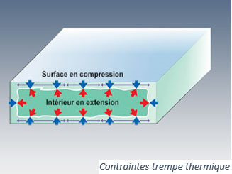

La trempe du verre lui conférera des propriétés mécaniques supplémentaires, en particulier l’amélioration de sa résistance. Il existe 2 types de verres trempés : thermiquement et chimiquement.
| La trempe thermique consiste à chauffer le verre autour de son point de ramollissement (environ 620°C) puis à le refroidir brusquement. Cela va créer des contraintes tension/compression entre l’intérieur et l’extérieur du verre.  |
Pour la trempe chimique, l’opération est différente : on soude 2 couches de verre à haute température, chacune ayant un coefficient de dilatation différent. En refroidissant, les couches se contractent plus ou moins ce qui crée des contraintes tension/compression entre les 2 surfaces, de la même manière que pour la trempe thermique. |